Onjuku, Chiba: things to do, food and stays
Onjuku · Chiba
Onjuku
Highlighted on the Chiba map.
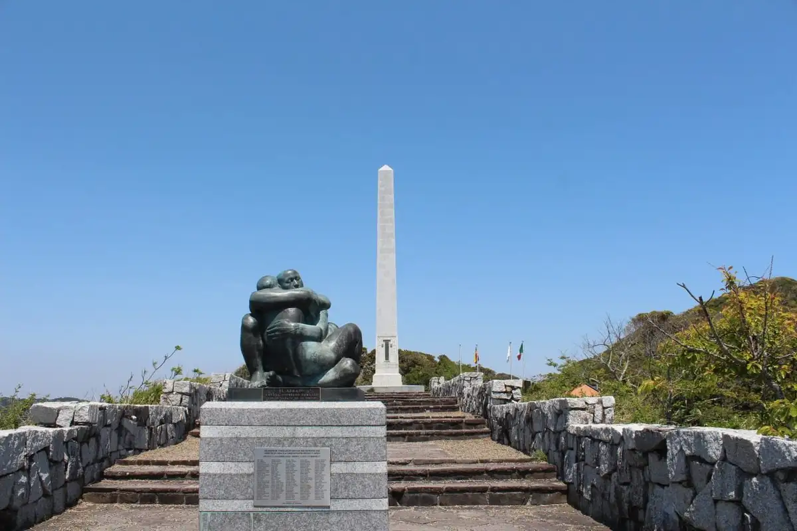
Stay
御宿五氣里
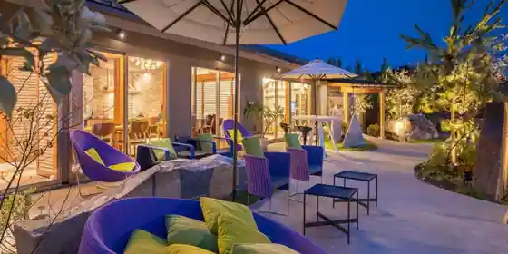
Onjuku Go Ki Sato
THE ONJUKU terrace
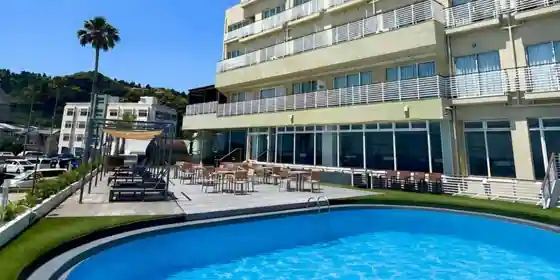
THE ONJUKU terrace
キャメルホテルリゾート
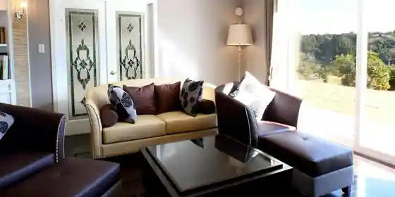
Kyameru Hotel Resort
伊勢えび・あわびが専門の宿 大野荘
Ise Ebi Awabiga Senmon No Yado Ono So
年間民宿チャイナ
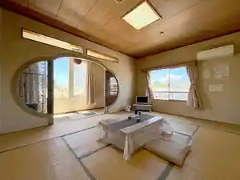
Nenkan Minshuku Chaina
Family-run minshuku in Shin, Onjuku with room-only plans.
御宿海楽
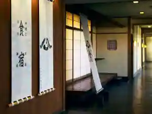
Onjuku Kairaku
新鮮な海の幸に舌鼓 御宿 旅館かのや
Shinsen Na Umi No Sachi Ni Shitazutsumi Onjuku Ryokan Kanoya
Ryokan inn in Hama, Onjuku with local seafood dinners.
ONJUKU GARDEN VILLA
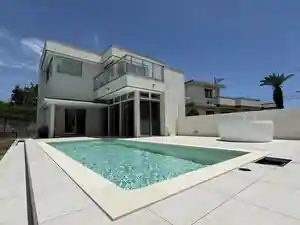
ONJUKU GARDEN VILLA
Inn in Suga, Onjuku with a sauna.
民宿 だいくどん
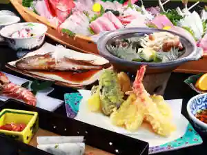
Minshuku Daikudon
御宿ビーチサイド
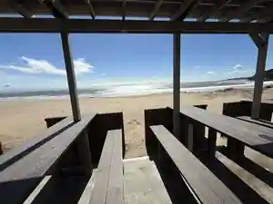
Onjuku Bichisaido
房総御宿町 海辺の漁師民宿 第八福市丸
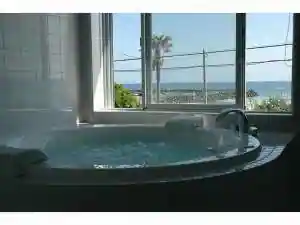
Boso Onjuku Machi Umibe No Ryoshi Minshuku Dai Hachi Fuku Ichimaru
年間民宿 むさし丸
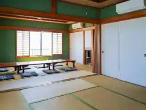
Nenkan Minshuku Musashi Maru
Dining
舟勝
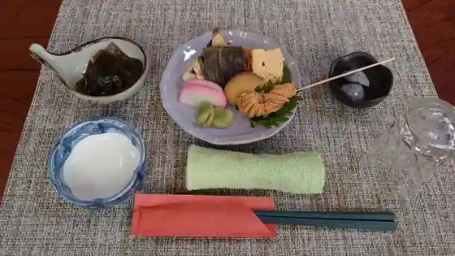
Fune Kachi
磯料理 かね八寿し
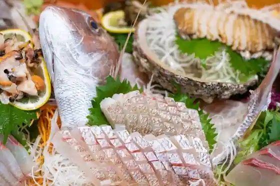
Iso Ryori Kane Hachi Hisashi Shi
白鳥丸
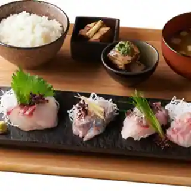
Hakucho Maru
たなか寿司
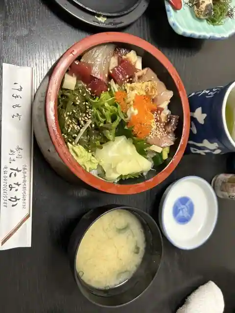
Tanaka Sushi
PORCO
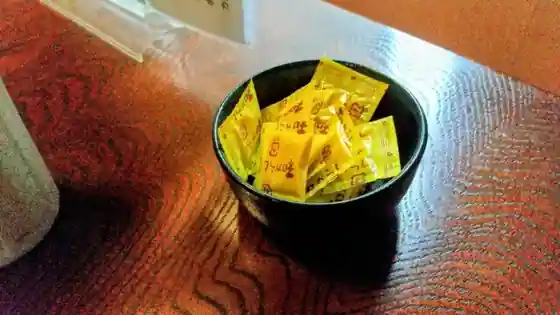
PORCO
郷土料理の宿 マタエム
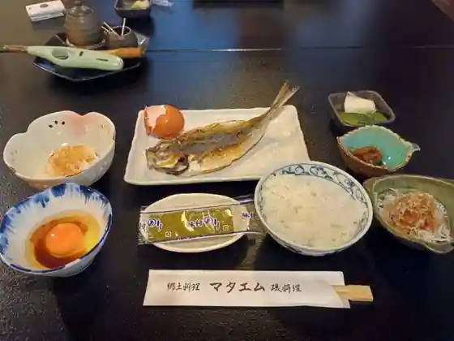
Kyodoryori No Yado Mataemu
レストランなかむら
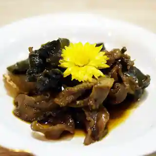
Restaurant Nakamura
つきじ
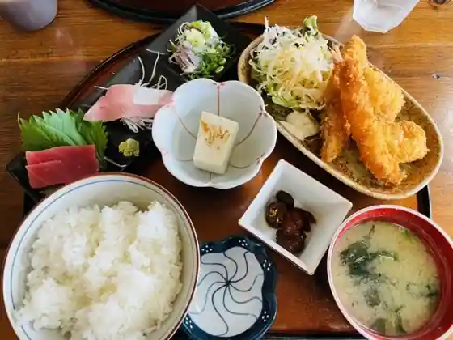
Tsukiji
農家レストラン 愚為庵
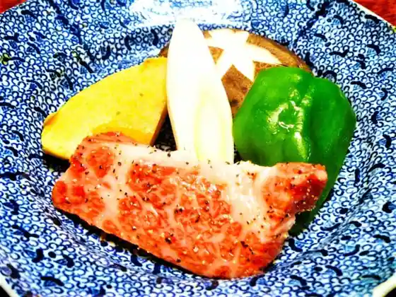
Noka Restaurant Gu Tame Iori
だいくどん
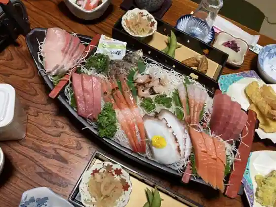
Daikudon
浜よし
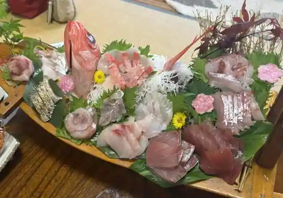
Hama Yoshi
石松
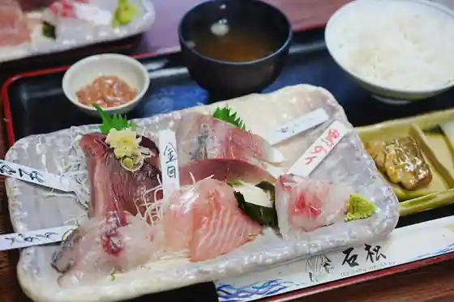
Ishimatsu
そば処 竹むら
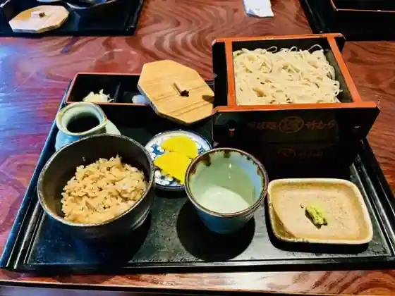
Soba Tokoro Take Mura
葵
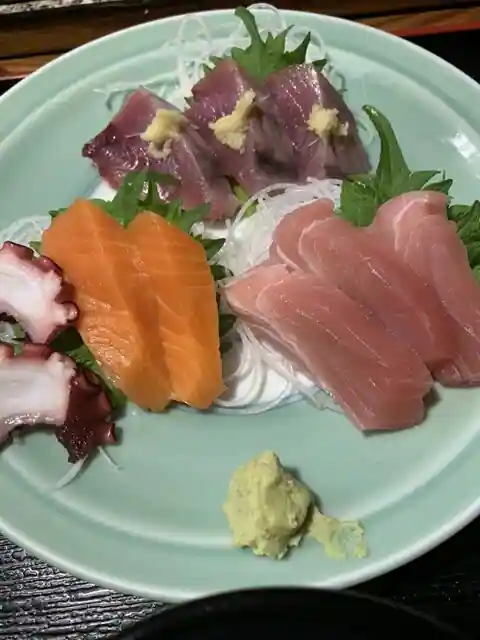
Aoi
御宿かいらく
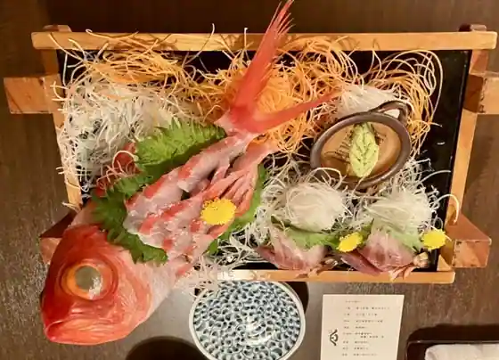
Onjuku Kairaku
サンダンス・リゾート御宿
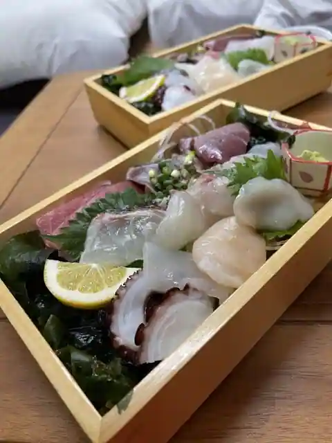
Sandansu Resort Onjuku
松よし
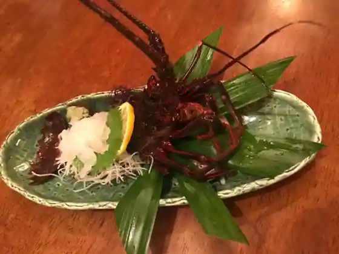
Matsu Yoshi
キャメルレストラン
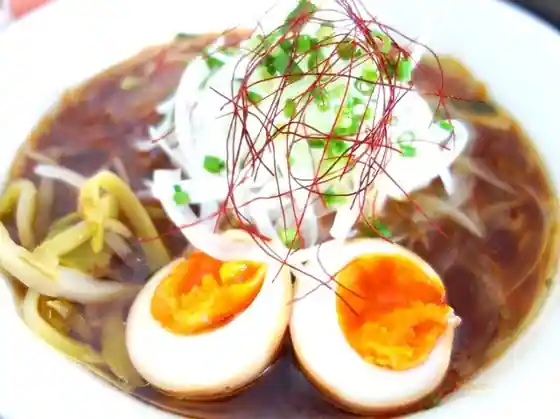
Kyameru Restaurant
よしき坊ラーメンねぶり
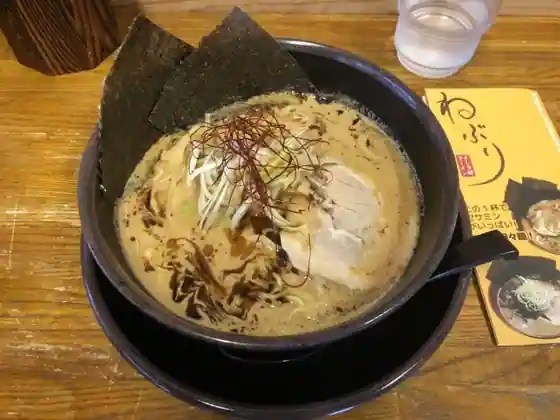
Yoshiki Bo Ramen Neburi
大野荘
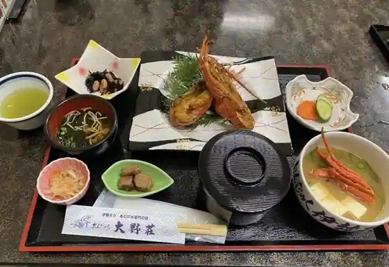
Ono So
Hula- Hana
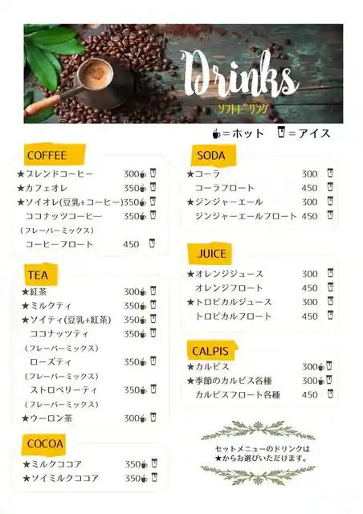
Hula- Hana
青木家
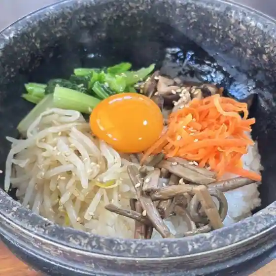
Aoki Ie
Sights
Gatsu no Sabaku Memorial Museum
Onjuku Chuo Beach
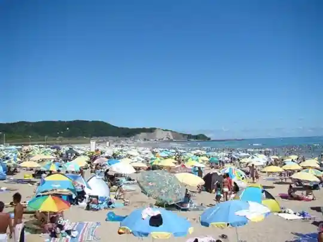
Onjuku Iwa Wada Beach
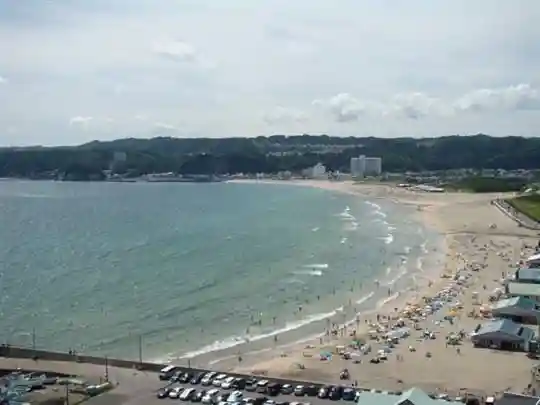
Onjuku Hama Beach
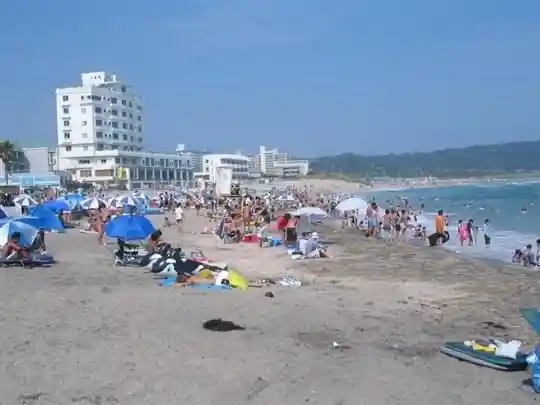
Mekishiko Memorial Park (Nissei Sumi Mikuni Kotsu Hassho Kinen Yuki Hi)